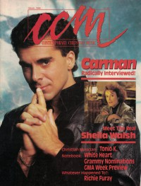

CMnexus
: Contemporary Christian culture, music, and media.
|
CCMMar 1988, vol. 10, iss. 9
| Cover |
|---|
|  | | Writers in this Issue |
|---|
Anderson, Warren
Baker, Paul
Brown, Bruce A.
Dale, Christopher
Donaldson, Devlin
Englestad, Jeffrey
Fischer, John
Frazer, Robyn
Hochhalter, Cherie
Howard, Tom
Irey, Kathy
Newcomb, Brian Quincy
Rabey, Steve
Styll, John W.
|
Cover Feature:
- "The CCM Interview" by John W. Styll
Christian Musician:Feature:
- "Getting Her 'Say So'" by Robyn Frazer
Toys in the Band:Notebook:
- "Going About The Father's Business" by Bruce A. Brown
- "Gospel Music '88: Making The Difference"
- "Bebe & CeCe Winans Lead Grammy Nominations"
Whatever Happened To ...?:Celebrating Our 10th Year:What's New:In Concert:
- "Pulpit Rock Church, Colorado Springs, CO" by Jeffrey Englestad
- "Helena Middle School, Helena, MT" by Cherie Hochhalter
- "First Evangelical Free Church, McKeesport, PA" by Kathy Irey
The Issue:
- "If It Was Good Enough For St. Paul, It's Good Enough For Me" by Brian Quincy Newcomb
John Fischer:
- "Soul Talk" by John Fischer
|
|